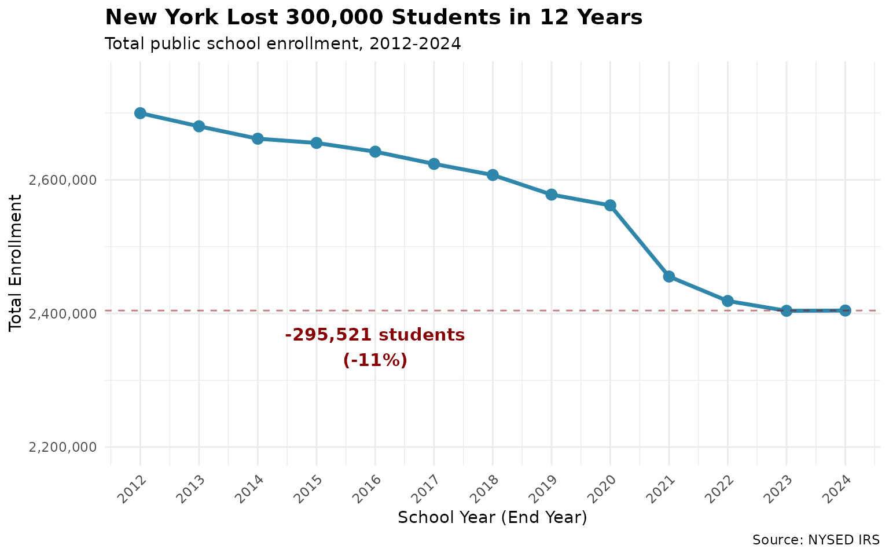
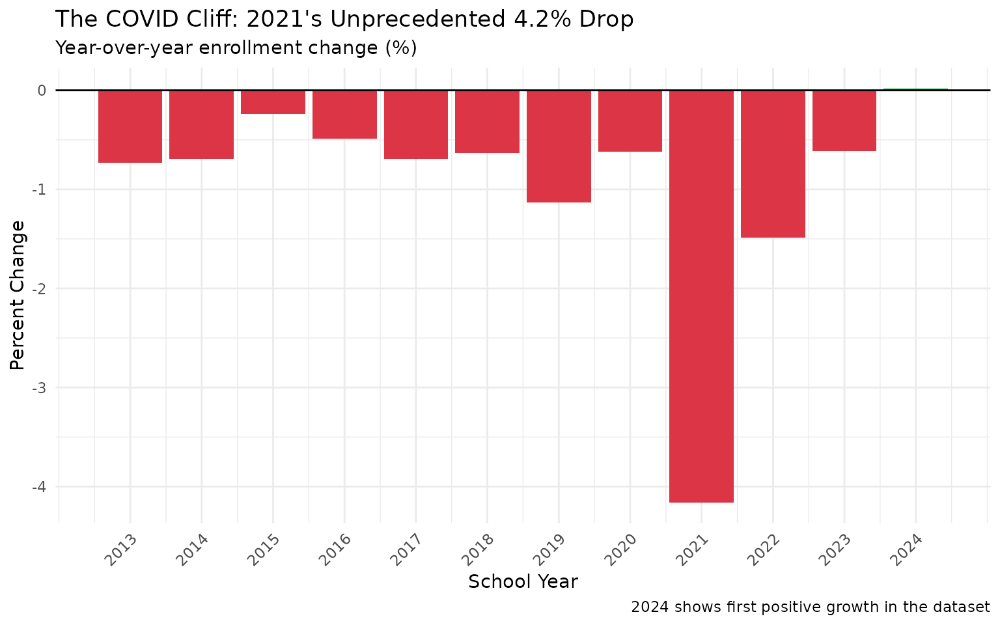
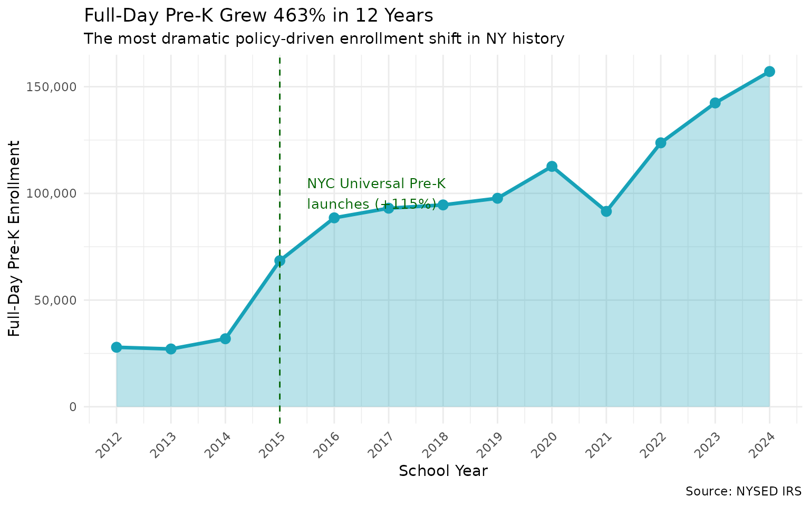
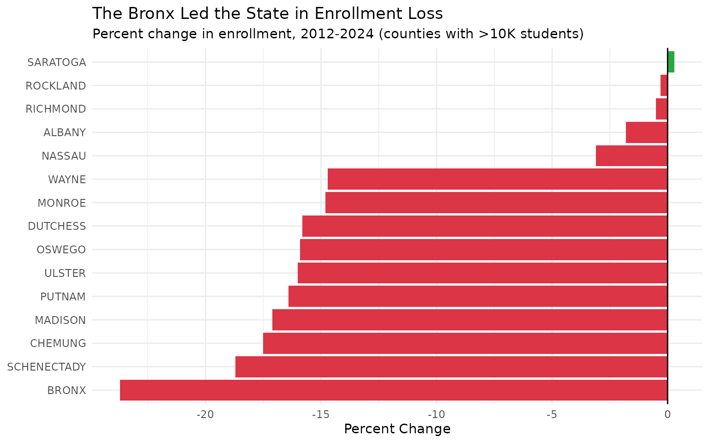
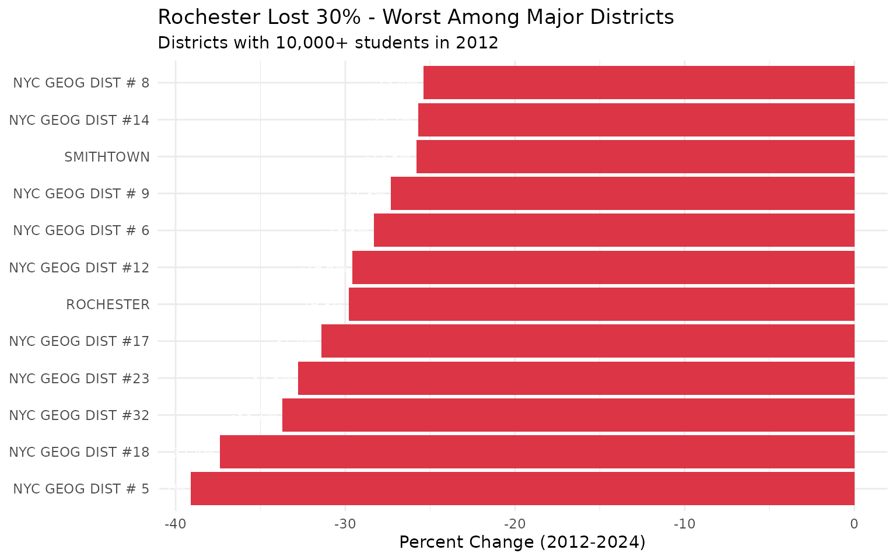
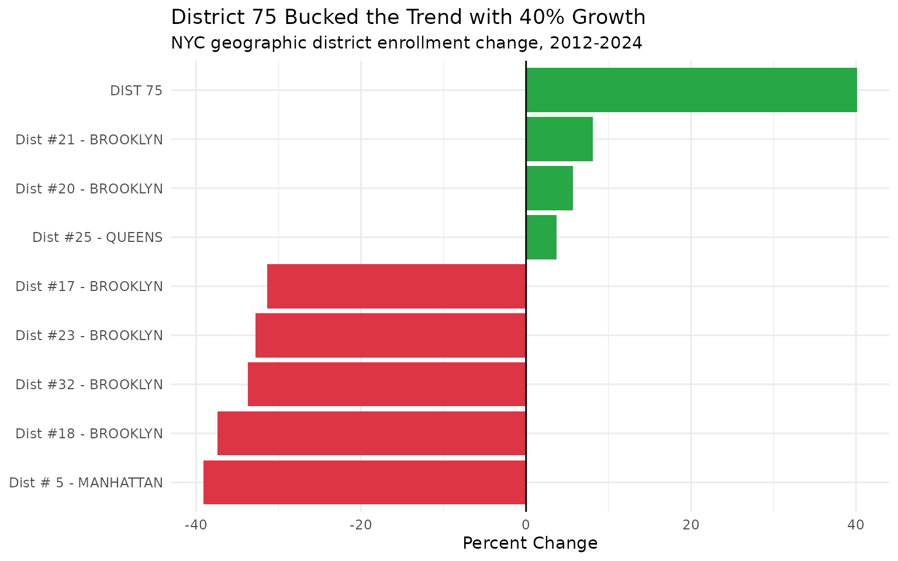
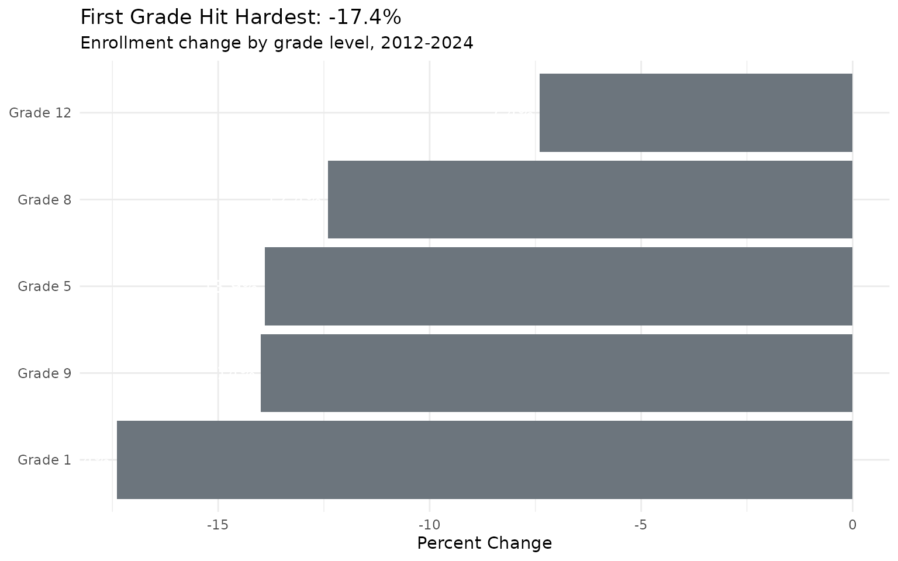

10 Surprising Findings in NY School Enrollment
Source:vignettes/district-hooks.Rmd
district-hooks.RmdWhere Did All the Students Go?
New York public schools have lost 295,521 students since 2012 - that’s the equivalent of emptying Buffalo, Rochester, Syracuse, and Yonkers combined. But this headline number hides a complex story of urban decline, Pre-K revolution, COVID disruption, and surprising pockets of growth.
This vignette explores 13 years of enrollment data to surface the trends shaping New York’s educational landscape.
# Fetch district-level data for all available years
enr <- fetch_enr_years(2012:2024, level = "district", tidy = TRUE)1. The Vanishing 300,000
New York lost 295,521 students (11%) from 2012 to 2024 - equivalent to losing every student in Buffalo, Rochester, Syracuse, and Yonkers combined.
state_trend <- enr %>%
filter(grade_level == "TOTAL") %>%
group_by(end_year) %>%
summarize(total = sum(n_students, na.rm = TRUE), .groups = "drop")
# Calculate loss
loss <- state_trend$total[state_trend$end_year == 2012] -
state_trend$total[state_trend$end_year == 2024]
ggplot(state_trend, aes(x = end_year, y = total)) +
geom_line(linewidth = 1.2, color = "#2E86AB") +
geom_point(size = 3, color = "#2E86AB") +
geom_hline(yintercept = state_trend$total[state_trend$end_year == 2024],
linetype = "dashed", color = "darkred", alpha = 0.5) +
annotate("text", x = 2016, y = 2350000,
label = paste0("-", comma(loss), " students\n(-11%)"),
color = "darkred", size = 4, fontface = "bold") +
scale_y_continuous(labels = comma, limits = c(2200000, 2750000)) +
scale_x_continuous(breaks = 2012:2024) +
labs(
title = "New York Lost 300,000 Students in 12 Years",
subtitle = "Total public school enrollment, 2012-2024",
x = "School Year (End Year)",
y = "Total Enrollment",
caption = "Source: NYSED IRS"
) +
theme_minimal() +
theme(
axis.text.x = element_text(angle = 45, hjust = 1),
plot.title = element_text(face = "bold", size = 14)
)
2. The COVID Cliff
2021 saw an unprecedented 4.2% single-year drop (106,560 students) - by far the largest decline in recorded data. But 2024 shows the first positive year (+0.02%), suggesting possible stabilization.
state_yoy <- state_trend %>%
mutate(
change = total - lag(total),
pct_change = round(change / lag(total) * 100, 2)
)
ggplot(state_yoy %>% filter(!is.na(pct_change)),
aes(x = end_year, y = pct_change, fill = pct_change > 0)) +
geom_col(show.legend = FALSE) +
geom_hline(yintercept = 0, color = "black") +
scale_fill_manual(values = c("TRUE" = "#28A745", "FALSE" = "#DC3545")) +
scale_x_continuous(breaks = 2013:2024) +
labs(
title = "The COVID Cliff: 2021's Unprecedented 4.2% Drop",
subtitle = "Year-over-year enrollment change (%)",
x = "School Year",
y = "Percent Change",
caption = "2024 shows first positive growth in the dataset"
) +
theme_minimal() +
theme(axis.text.x = element_text(angle = 45, hjust = 1))
3. The Pre-K Revolution
Full-day Pre-K exploded from 28K to 157K - a 463% increase. NYC’s Universal Pre-K program drove a stunning 115% jump in 2015 alone.
pk_trend <- enr %>%
filter(grade_level == "PK_FULL") %>%
group_by(end_year) %>%
summarize(total = sum(n_students, na.rm = TRUE), .groups = "drop") %>%
mutate(
yoy_pct = round((total - lag(total)) / lag(total) * 100, 1)
)
ggplot(pk_trend, aes(x = end_year, y = total)) +
geom_area(fill = "#17A2B8", alpha = 0.3) +
geom_line(linewidth = 1.2, color = "#17A2B8") +
geom_point(size = 3, color = "#17A2B8") +
geom_vline(xintercept = 2015, linetype = "dashed", color = "darkgreen") +
annotate("text", x = 2015.5, y = 100000,
label = "NYC Universal Pre-K\nlaunches (+115%)",
hjust = 0, color = "darkgreen", size = 3.5) +
scale_y_continuous(labels = comma, limits = c(0, NA)) +
scale_x_continuous(breaks = 2012:2024) +
labs(
title = "Full-Day Pre-K Grew 463% in 12 Years",
subtitle = "The most dramatic policy-driven enrollment shift in NY history",
x = "School Year",
y = "Full-Day Pre-K Enrollment",
caption = "Source: NYSED IRS"
) +
theme_minimal() +
theme(axis.text.x = element_text(angle = 45, hjust = 1))
4. The Bronx Exodus
The Bronx lost 23.7% of its students - the worst percentage decline among major counties, losing nearly 50,000 students.
county_2012 <- enr %>% filter(end_year == 2012, grade_level == "TOTAL") %>%
group_by(county) %>% summarize(enr_2012 = sum(n_students, na.rm = TRUE), .groups = "drop")
county_2024 <- enr %>% filter(end_year == 2024, grade_level == "TOTAL") %>%
group_by(county) %>% summarize(enr_2024 = sum(n_students, na.rm = TRUE), .groups = "drop")
county_change <- county_2012 %>%
inner_join(county_2024, by = "county") %>%
filter(enr_2012 > 10000) %>% # Major counties only
mutate(
change = enr_2024 - enr_2012,
pct_change = round((enr_2024 - enr_2012) / enr_2012 * 100, 1)
) %>%
arrange(pct_change)
# Show top 10 declining and top 5 growing
county_display <- bind_rows(
county_change %>% head(10),
county_change %>% tail(5)
) %>%
mutate(county = factor(county, levels = county))
ggplot(county_display, aes(x = reorder(county, pct_change), y = pct_change,
fill = pct_change > 0)) +
geom_col(show.legend = FALSE) +
geom_hline(yintercept = 0) +
coord_flip() +
scale_fill_manual(values = c("TRUE" = "#28A745", "FALSE" = "#DC3545")) +
labs(
title = "The Bronx Led the State in Enrollment Loss",
subtitle = "Percent change in enrollment, 2012-2024 (counties with >10K students)",
x = NULL,
y = "Percent Change"
) +
theme_minimal()
5. Rochester’s Collapse
Rochester City SD lost 30% of enrollment (32K to 23K) - the steepest decline among major urban districts.
# Calculate 2012-2024 change by district
dist_2012 <- enr %>% filter(end_year == 2012, grade_level == "TOTAL") %>%
select(district_name, county, enr_2012 = n_students)
dist_2024 <- enr %>% filter(end_year == 2024, grade_level == "TOTAL") %>%
select(district_name, enr_2024 = n_students)
change <- dist_2012 %>%
inner_join(dist_2024, by = "district_name") %>%
filter(!is.na(enr_2012), !is.na(enr_2024), enr_2012 >= 10000) %>%
mutate(
change = enr_2024 - enr_2012,
pct_change = round((enr_2024 - enr_2012) / enr_2012 * 100, 1)
)
# Top decliners among big districts
big_declines <- change %>%
arrange(pct_change) %>%
head(12) %>%
mutate(district_short = gsub(" - .*", "", district_name))
ggplot(big_declines, aes(x = reorder(district_short, pct_change), y = pct_change)) +
geom_col(fill = "#DC3545") +
geom_text(aes(label = paste0(pct_change, "%")), hjust = 1.1, color = "white", size = 3) +
coord_flip() +
labs(
title = "Rochester Lost 30% - Worst Among Major Districts",
subtitle = "Districts with 10,000+ students in 2012",
x = NULL,
y = "Percent Change (2012-2024)"
) +
theme_minimal()
6. NYC’s Special Ed Surge
District 75 grew 40% while nearly every other NYC district shrank. NYC’s citywide special education district is one of very few that gained students.
# Find NYC District 75
nyc_districts <- change %>%
filter(grepl("NYC", district_name)) %>%
mutate(
is_d75 = grepl("DIST 75", district_name)
) %>%
arrange(pct_change)
# Top 10 NYC district changes
nyc_display <- bind_rows(
nyc_districts %>% filter(is_d75), # Always show District 75
nyc_districts %>% filter(!is_d75) %>% head(5), # Worst 5
nyc_districts %>% filter(!is_d75) %>% tail(3) # Best 3
) %>%
mutate(district_short = gsub("NYC GEOG DIST ", "Dist ", district_name),
district_short = gsub("NYC SPEC SCHOOLS - ", "", district_short))
ggplot(nyc_display, aes(x = reorder(district_short, pct_change), y = pct_change,
fill = pct_change > 0)) +
geom_col(show.legend = FALSE) +
geom_hline(yintercept = 0) +
coord_flip() +
scale_fill_manual(values = c("TRUE" = "#28A745", "FALSE" = "#DC3545")) +
labs(
title = "District 75 Bucked the Trend with 40% Growth",
subtitle = "NYC geographic district enrollment change, 2012-2024",
x = NULL,
y = "Percent Change"
) +
theme_minimal()
7. First Grade Cratering
Grade 1 enrollment fell 17.4% - the steepest decline by grade level, reflecting birth rate drops and family out-migration.
grade_totals <- enr %>%
filter(grade_level %in% c("K", "01", "05", "08", "09", "12")) %>%
group_by(end_year, grade_level) %>%
summarize(total = sum(n_students, na.rm = TRUE), .groups = "drop")
g_2012 <- grade_totals %>% filter(end_year == 2012) %>% rename(n_2012 = total)
g_2024 <- grade_totals %>% filter(end_year == 2024) %>% rename(n_2024 = total) %>%
select(grade_level, n_2024)
grade_change <- g_2012 %>%
inner_join(g_2024, by = "grade_level") %>%
mutate(
pct_change = round((n_2024 - n_2012) / n_2012 * 100, 1),
grade_label = case_when(
grade_level == "01" ~ "Grade 1",
grade_level == "05" ~ "Grade 5",
grade_level == "08" ~ "Grade 8",
grade_level == "09" ~ "Grade 9",
grade_level == "12" ~ "Grade 12",
grade_level == "K" ~ "Kindergarten"
)
)
ggplot(grade_change, aes(x = reorder(grade_label, pct_change), y = pct_change)) +
geom_col(fill = "#6C757D") +
geom_text(aes(label = paste0(pct_change, "%")), hjust = 1.1, color = "white", size = 4) +
coord_flip() +
labs(
title = "First Grade Hit Hardest: -17.4%",
subtitle = "Enrollment change by grade level, 2012-2024",
x = NULL,
y = "Percent Change"
) +
theme_minimal()
8. Charter Schools’ Rising Market Share
# Need school-level data for charter information
enr_schools <- fetch_enr_years(2023:2024, level = "school", tidy = TRUE)Charter schools now enroll ~181K students (7.5% of total) across 343 schools, growing even as traditional public school enrollment declines.
charter_summary <- enr_schools %>%
filter(grade_level == "TOTAL", is_school == TRUE) %>%
group_by(end_year, is_charter) %>%
summarize(
total = sum(n_students, na.rm = TRUE),
n_schools = n(),
.groups = "drop"
) %>%
mutate(
type = ifelse(is_charter, "Charter", "Traditional"),
avg_size = round(total / n_schools)
)
# Show as table
charter_summary %>%
select(end_year, type, total, n_schools, avg_size) %>%
arrange(end_year, desc(type)) %>%
knitr::kable(
col.names = c("Year", "School Type", "Total Students", "# Schools", "Avg Size"),
format.args = list(big.mark = ","),
caption = "Charter schools grew from 175K to 181K students in one year"
)| Year | School Type | Total Students | # Schools | Avg Size |
|---|---|---|---|---|
| 2,023 | Traditional | 2,308,189 | 4,402 | 524 |
| 2,023 | Charter | 175,396 | 342 | 513 |
| 2,024 | Traditional | 2,307,920 | 4,406 | 524 |
| 2,024 | Charter | 181,334 | 343 | 529 |
9. Only One County Grew
Saratoga County is the only county that GREW (+0.3%). Suburban counties held steady while urban and rural areas declined sharply.
county_all <- county_2012 %>%
inner_join(county_2024, by = "county") %>%
mutate(
pct_change = round((enr_2024 - enr_2012) / enr_2012 * 100, 1),
grew = pct_change > 0
)
# Summary stats
n_grew <- sum(county_all$grew)
n_declined <- sum(!county_all$grew)
cat(paste0("Counties that grew: ", n_grew, "\n"))## Counties that grew: 1## Counties that declined: 61
# The one county that grew
county_all %>% filter(grew) %>%
select(county, enr_2012, enr_2024, pct_change) %>%
knitr::kable(caption = "The Only Growing County")| county | enr_2012 | enr_2024 | pct_change |
|---|---|---|---|
| SARATOGA | 31661 | 31746 | 0.3 |
10. The Pre-K Inversion
NYC Pre-K is now 99% full-day (103K of 104K), while rest of state is only 85% full-day. This represents a fundamental policy shift in early childhood education.
enr_2024 <- fetch_enr(2024, level = "district", tidy = TRUE, use_cache = TRUE)
pk_comparison <- enr_2024 %>%
filter(grade_level %in% c("PK_FULL", "PK_HALF")) %>%
group_by(is_nyc, grade_level) %>%
summarize(total = sum(n_students, na.rm = TRUE), .groups = "drop") %>%
pivot_wider(names_from = grade_level, values_from = total) %>%
mutate(
region = ifelse(is_nyc, "NYC", "Rest of NY"),
total_pk = PK_FULL + PK_HALF,
pct_full_day = round(PK_FULL / total_pk * 100, 1)
)
ggplot(pk_comparison, aes(x = region, y = pct_full_day, fill = region)) +
geom_col(show.legend = FALSE, width = 0.6) +
geom_text(aes(label = paste0(pct_full_day, "%")), vjust = -0.5, size = 5, fontface = "bold") +
scale_fill_manual(values = c("NYC" = "#2E86AB", "Rest of NY" = "#A23B72")) +
scale_y_continuous(limits = c(0, 110)) +
labs(
title = "NYC Pre-K is Now 99% Full-Day",
subtitle = "Percentage of Pre-K students in full-day programs, 2024",
x = NULL,
y = "Percent Full-Day"
) +
theme_minimal() +
theme(
axis.text.x = element_text(size = 12, face = "bold"),
plot.title = element_text(face = "bold", size = 14)
)
The Big Picture
New York’s public school enrollment data reveals a state in profound transformation:
Winners and Losers
| Growing | Shrinking |
|---|---|
| Full-day Pre-K (+463%) | Total enrollment (-11%) |
| District 75 special ed (+40%) | The Bronx (-24%) |
| Charter schools (7.3% share) | Rochester (-30%) |
| Saratoga County (+0.3%) | Grade 1 (-17%) |
Key Statistics
| Finding | Key Statistic |
|---|---|
| Total enrollment loss | -295,521 students (-11%) |
| COVID impact (2021) | -106,560 students (-4.2%) |
| Pre-K full-day growth | +129,231 students (+463%) |
| Bronx county loss | -49,447 students (-23.7%) |
| Rochester district loss | -9,621 students (-29.8%) |
| District 75 growth | +7,784 students (+40.1%) |
| Grade 1 decline | -33,643 students (-17.4%) |
| Charter market share | 181K students (7.3%) |
| Growing counties | 1 of 62 (Saratoga) |
| NYC full-day Pre-K | 99% vs 85% rest of state |
What Does This Mean?
These patterns reflect three converging forces:
Demographic decline: New York’s birth rate has fallen sharply, especially in urban areas. The pipeline of future students is shrinking.
Policy success: Universal Pre-K transformed early childhood education in NYC. The 463% growth in full-day Pre-K is one of the most dramatic policy-driven enrollment shifts in state history.
COVID disruption: The pandemic accelerated pre-existing trends and may have permanently altered family choices about public vs. private schooling, remote work migration, and urban living.
The 2024 data shows the first positive year-over-year change (+0.02%), suggesting possible stabilization - but with Grade 1 enrollment still declining, the long-term trajectory remains uncertain.
Session Info
## R version 4.5.2 (2025-10-31)
## Platform: x86_64-pc-linux-gnu
## Running under: Ubuntu 24.04.3 LTS
##
## Matrix products: default
## BLAS: /usr/lib/x86_64-linux-gnu/openblas-pthread/libblas.so.3
## LAPACK: /usr/lib/x86_64-linux-gnu/openblas-pthread/libopenblasp-r0.3.26.so; LAPACK version 3.12.0
##
## locale:
## [1] LC_CTYPE=C.UTF-8 LC_NUMERIC=C LC_TIME=C.UTF-8
## [4] LC_COLLATE=C.UTF-8 LC_MONETARY=C.UTF-8 LC_MESSAGES=C.UTF-8
## [7] LC_PAPER=C.UTF-8 LC_NAME=C LC_ADDRESS=C
## [10] LC_TELEPHONE=C LC_MEASUREMENT=C.UTF-8 LC_IDENTIFICATION=C
##
## time zone: UTC
## tzcode source: system (glibc)
##
## attached base packages:
## [1] stats graphics grDevices utils datasets methods base
##
## other attached packages:
## [1] tidyr_1.3.2 scales_1.4.0 ggplot2_4.0.1 dplyr_1.1.4
## [5] nyschooldata_0.1.0
##
## loaded via a namespace (and not attached):
## [1] gtable_0.3.6 jsonlite_2.0.0 compiler_4.5.2 tidyselect_1.2.1
## [5] jquerylib_0.1.4 systemfonts_1.3.1 textshaping_1.0.4 readxl_1.4.5
## [9] yaml_2.3.12 fastmap_1.2.0 R6_2.6.1 labeling_0.4.3
## [13] generics_0.1.4 knitr_1.51 tibble_3.3.0 desc_1.4.3
## [17] downloader_0.4.1 bslib_0.9.0 pillar_1.11.1 RColorBrewer_1.1-3
## [21] rlang_1.1.7 cachem_1.1.0 xfun_0.55 fs_1.6.6
## [25] sass_0.4.10 S7_0.2.1 cli_3.6.5 pkgdown_2.2.0
## [29] withr_3.0.2 magrittr_2.0.4 digest_0.6.39 grid_4.5.2
## [33] rappdirs_0.3.3 lifecycle_1.0.5 vctrs_0.6.5 evaluate_1.0.5
## [37] glue_1.8.0 cellranger_1.1.0 farver_2.1.2 codetools_0.2-20
## [41] ragg_1.5.0 purrr_1.2.1 rmarkdown_2.30 tools_4.5.2
## [45] pkgconfig_2.0.3 htmltools_0.5.9